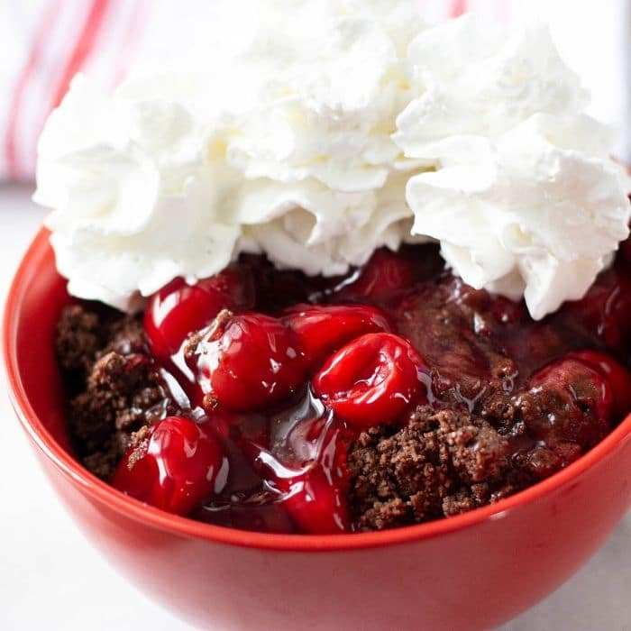

Black Forest Cake

Pictured: A delicious blend of chocolate cake and cherries.
Do you need a super easy, quick dessert for a holiday get together?This dessert is always a hit at gatherings. Served warm or cold it is a winning recipe.
This dessert is shown topped with Whipped Cream but is also amazing served without topping or with vanilla ice cream. The cake reheats well in the microwave and has a lava cake consistency when heated.
Ingredients
- 1 box Chocolate Cake Mix, Dry
- 1/2 c. Butter, Melted
- 12 oz. Milk Chocolate Baking Chips
- 2 15 oz cans Cherry Pie Filling
- Whipped Cream, Optional
- Vanilla Ice Cream, Optional
- In a 9x13 casserole dish pour both cans of cherry pie filling. Level the pie filling with a spoon.
- Sprinkle the dry cake mix over the pie filling. Do Not Stir!
- Melt the butter in a microwave safe dish, then pout the buter over the cake mix. Do Not Stir!
- Sprinkle the chocolate chips over the melted butter evenly. Do Not Stir!
- Bake at 350 degrees for 45 minutes.
- Remove cake from oven, let cool slightly, then enjoy!
- Optional Toppings: Vanilla Ice Cream or Whipped Cream